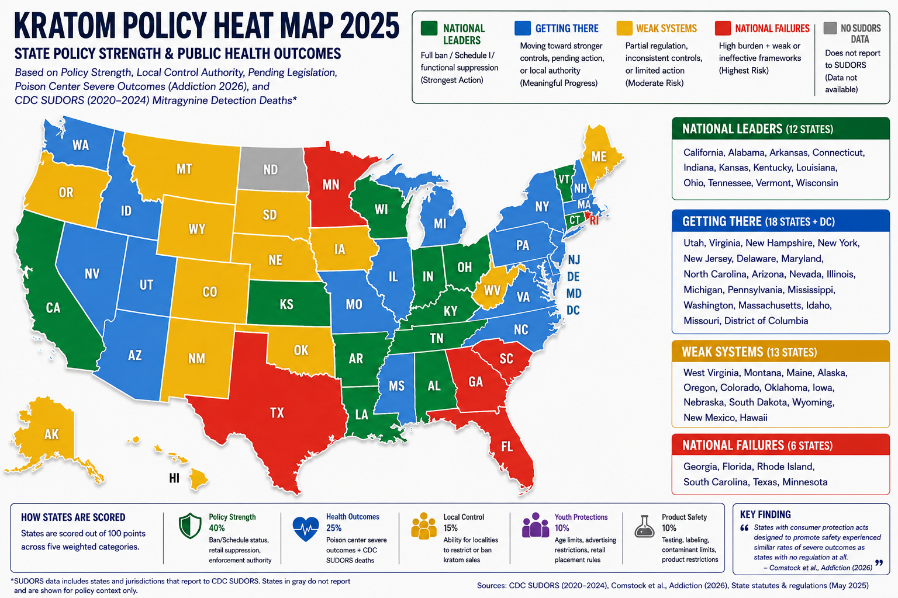

Kratom regulation, retail suppression, and public health outcomes across the United States – combining policy strength with CDC surveillance data and peer-reviewed findings.

State tiers are based on a composite score weighting policy strength, SUDORS mortality burden, local restriction authority, and legislative momentum. Data sources: CDC SUDORS (2019-2025), Addiction (2026), FDA Import Alerts, state pharmacy board actions, and pending legislation.
| Retail suppression / scheduling / full ban | 40% |
| SUDORS mortality & poison center burden | 25% |
| Local restriction authority (county/city bans) | 15% |
| Youth protections & age restrictions | 10% |
| Product restrictions (labeling, testing, extracts) | 10% |
* States with missing SUDORS data are noted separately. “National Failures” reflect policy direction, retail normalization, and avoidable burden — not solely current mortality counts.